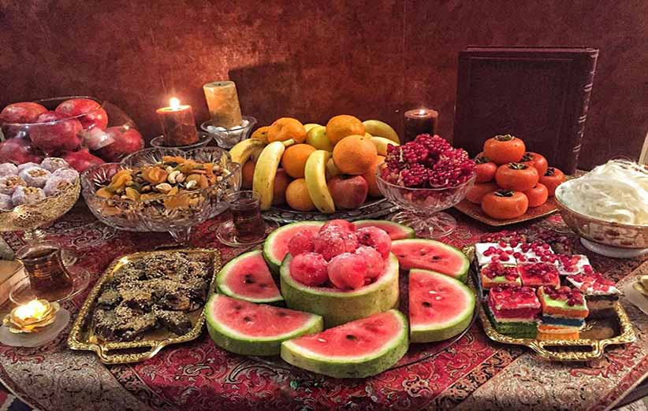

سفره شب یلدا
از جذابترین آیینهای شب یلدا یا شب چله، سفره و خوردنیهای آن است. سفره شب یلدا شامل میوههای مخصوص، آجیل مخصوص و دیگر تنقلات است. در شب چله در دوران قدیم، سفرهای به نام میَزد پهن میکردند. آنها میوههای تر و خشک، آجیل یا به اصطلاح زرتشتیان لُرک بر سفره میگذاشتند. لرک از اجزای اصلی این سفره بود و در واقع ولیمه این جشن به حساب میآمد. از اجزای دیگر این سفره آتشدان، عطردان، بخوردان و بَرسَم را میتوان نام برد. بَرسَم وسیلهای برای دعاخوانی ست که از جنس شاخه گیاهی خاص و یا فلزِ برنج و نقره ساخته میشود.
